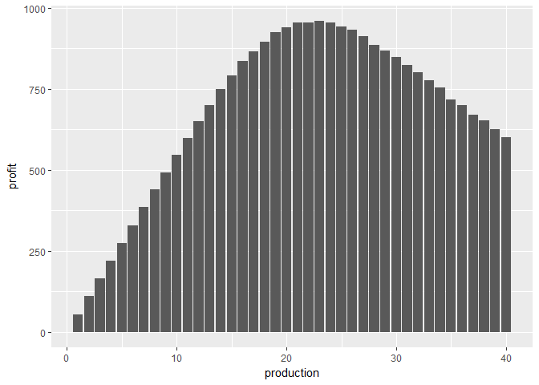
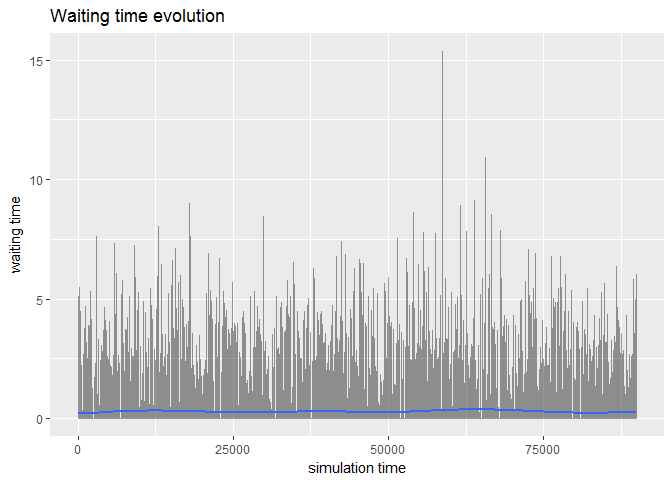
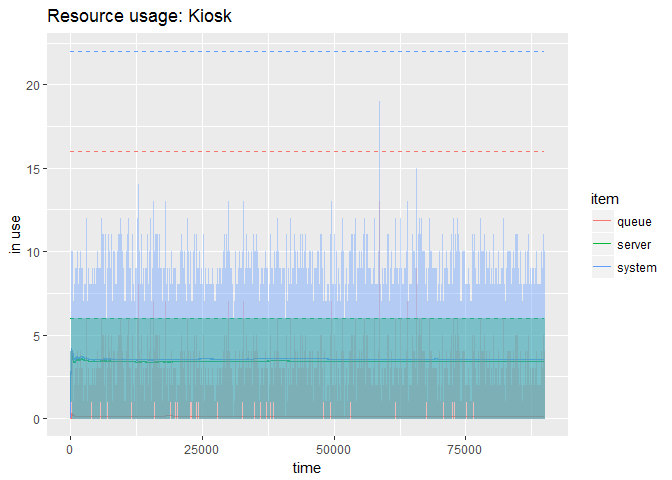
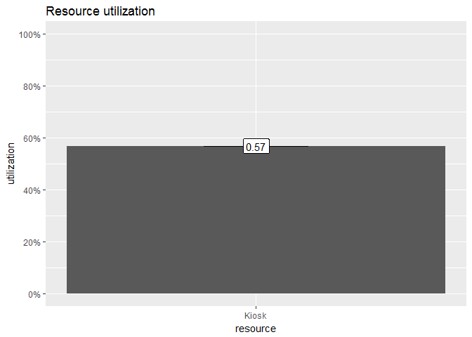
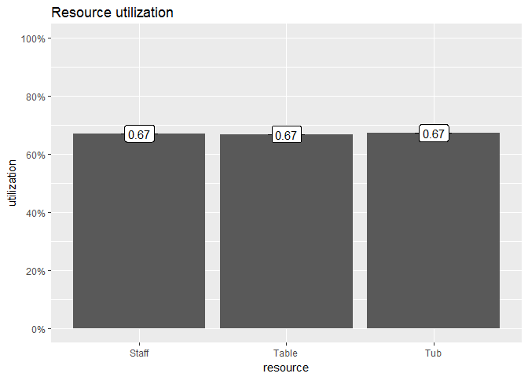

library(tidyverse)
library(simmer)
library(triangle)
library(DT)Week 7: Building Descriptive Models: Simulation
Lesson 1: Simulation Basics
QQ6
What is the quantity of rolls that Suzie should make each day in order to maximize profitability? Assume that the underlying demand ~N(20,5). Round your answer to the closest integer.
# set.seed(4)
data_frame(
production = rep(1:40, each = 1e4),
demand = rnorm(40e4, 20, 5) %>% round,
revenue = pmin(production, demand) * 80,
cost = production * 25,
profit = revenue - cost
) %>%
group_by(production) %>%
summarise_each(funs(mean)) %>%
ggplot(aes(production, profit)) +
geom_col()
Recitations
Problem: Boarding Pass Kiosks at Logan
Recitation 1.1
- Create a new model
- Create a Source for passengers
- Create a Sink for passengers to exit
- Specify the length of the simulation
- Run the model
- Create a Delay for kiosk use
- Create a Queue for waiting
- Run the model
- Let’s measure time in the queue
- Run the model
customer <-
create_trajectory("Customer's path") %>%
seize("Kiosk", 1) %>%
timeout(function() rtriangle(1, a = 0.5, b = 15, c = 5)) %>%
release("Kiosk", 1)
logan <-
simmer("Logan") %>%
add_resource("Kiosk", 6, 16) %>%
add_generator("Customer", customer, function() rexp(1, 30/60))Model is run.
logan %>% run(until = 9e4)## simmer environment: Logan | now: 90000 | next: 90000.1757631333
## { Resource: Kiosk | monitored: 1 | server status: 3(6) | queue status: 0(16) }
## { Generator: Customer | monitored: 1 | n_generated: 44870 }Average times.
average_times <- function(m) {
m %>% get_mon_arrivals(per_resource = TRUE) %>%
mutate(
flow_time = end_time - start_time,
waiting_time = flow_time - activity_time
) %>%
group_by(resource) %>%
summarise_each(funs(mean), flow_time, activity_time, waiting_time) %>%
datatable(options = list(dom = 't')) %>% formatRound(2:4, 2)
}logan %>% average_timesHow many passengers made it.
resource_popularity <- function(m) {
m %>% get_mon_arrivals(per_resource = TRUE) %>%
group_by(name) %>%
summarise(resource = resource %>% paste(collapse = " -> ")) %>%
count(resource) %>%
datatable(options = list(dom = "t"))
}logan %>% resource_popularityRecitation 1.2
- Create a Time Plot for queue size
- Change the queue capacity
- Run the model
- Scaling the Time Plot
- Run the model
Waiting times.
logan %>% plot_evolution_arrival_times("waiting_time")## `geom_smooth()` using method = 'gam'
Resource usage.
logan %>% plot_resource_usage("Kiosk", steps = TRUE)
Recitation 1.3
- Create a Resource Pool
- Replacing the queue with a Seize
- Add a Release when done
- Relax capacity at delay
- Run the model
Resource utilization.
logan %>% plot_resource_utilization("Kiosk") +
geom_label(aes(label = Q50 %>% round(2), y = Q50, x = resource))
Part 2 of Boarding Pass Problem
Recitation 1.4
- Create a Select Output
- Create a Resource Pool for CSRs
- Add a Service for seeing the CSRs
- Let’s measure time in the service
- Run the model
customer <-
create_trajectory("Customer's path") %>%
branch(
option = function() sample(1:2, 1, prob = c(0.8, 0.2)),
continue = c(F, F),
create_trajectory("Kiosk path") %>%
seize("Kiosk", 1) %>%
timeout(function() rtriangle(1, 0.5, 15, 5)) %>%
release("Kiosk", 1),
create_trajectory("CSR path") %>%
seize("CSR", 1) %>%
timeout(function() rtriangle(1, 3, 9, 6)) %>%
release("CSR", 1)
)
logan <-
simmer("Logan") %>%
add_resource("Kiosk", 6, 16) %>%
add_resource("CSR", 2) %>%
add_generator("Customer", customer, function() rexp(1, 0.5))Model is run.
logan %>% run(until = 9e4)## simmer environment: Logan | now: 90000 | next: 90000.2498332999
## { Resource: Kiosk | monitored: 1 | server status: 6(6) | queue status: 0(16) }
## { Resource: CSR | monitored: 1 | server status: 0(2) | queue status: 0(Inf) }
## { Generator: Customer | monitored: 1 | n_generated: 45163 }Average times.
logan %>% average_timesPart 3a of Boarding Pass Problem
Recitation 1.5
- Define a timeout in the Seize
- Run the model
customer_csr <- create_trajectory("CSR path") %>%
seize("CSR", 1) %>%
timeout(function() rtriangle(1, 3, 9, 6)) %>%
release("CSR", 1)
customer_kiosk <- create_trajectory("Kiosk path") %>%
renege_in(5, customer_csr) %>%
seize("Kiosk", 1) %>%
renege_abort() %>%
timeout(function() rtriangle(1, 0.5, 15, 5)) %>%
release("Kiosk", 1)
customer <- create_trajectory("Customer's path") %>%
branch(
option = function() sample(1:2, 1, prob = c(0.8, 0.2)),
continue = c(F, F),
customer_kiosk,
customer_csr
)
logan <-
simmer("Logan") %>%
add_resource("Kiosk", 6, 16) %>%
add_resource("CSR", 2) %>%
add_generator("Customer", customer, function() rexp(1, 0.5))Model is run.
logan %>% run(until = 9e4)## simmer environment: Logan | now: 90000 | next: 90000.045264714
## { Resource: Kiosk | monitored: 1 | server status: 4(6) | queue status: 0(16) }
## { Resource: CSR | monitored: 1 | server status: 0(2) | queue status: 0(Inf) }
## { Generator: Customer | monitored: 1 | n_generated: 45020 }How many people benefited from the redirecting technology?
# logan %>% get_mon_arrivals %>% count(finished)
logan %>% resource_popularityPart 3b of Boarding Pass Problem
Recitation 1.5
- Define a timeout in the Service
- Run the model
customer_manager <- create_trajectory("Manager path") %>%
seize("Manager", 1) %>%
release("Manager", 1)
customer_csr <- create_trajectory("CSR path") %>%
renege_in(30, customer_manager) %>%
seize("CSR", 1) %>%
renege_abort() %>%
timeout(function() rtriangle(1, 3, 9, 6)) %>%
release("CSR", 1)
customer_kiosk <- create_trajectory("Kiosk path") %>%
renege_in(5, customer_csr) %>%
seize("Kiosk", 1) %>%
renege_abort() %>%
timeout(function() rtriangle(1, 0.5, 15, 5)) %>%
release("Kiosk", 1)
customer <- create_trajectory("Customer's path") %>%
branch(
option = function() sample(1:2, 1, prob = c(0.8, 0.2)),
continue = c(F, F),
customer_kiosk,
customer_csr
)
logan <-
simmer("Logan") %>%
add_resource("Kiosk", 6, 16) %>%
add_resource("CSR", 1) %>%
add_resource("Manager", Inf) %>%
add_generator("Customer", customer, function() rexp(1, 0.5))Model is run.
logan %>% run(until = 9e4)## simmer environment: Logan | now: 90000 | next: 90000.9969563981
## { Resource: Kiosk | monitored: 1 | server status: 2(6) | queue status: 0(16) }
## { Resource: CSR | monitored: 1 | server status: 0(1) | queue status: 0(Inf) }
## { Resource: Manager | monitored: 1 | server status: 0(Inf) | queue status: 0(Inf) }
## { Generator: Customer | monitored: 1 | n_generated: 45169 }How many people asked to talk with a manager?
logan %>% resource_popularityProblem: Patches Beauty Salon
Recitation 2.1
customer_baths <- create_trajectory() %>%
seize("Tub", 1) %>%
seize("Staff", 1) %>%
timeout(function() rtriangle(1, 5, 15, 10)) %>%
release("Staff", 1) %>%
release("Tub", 1)
customer_nails <- create_trajectory() %>%
seize("Table", 1) %>%
seize("Staff", 1) %>%
timeout(function() rtriangle(1, 3, 7, 5)) %>%
release("Staff", 1) %>%
release("Table", 1)
customer_dog <- create_trajectory() %>%
branch(
option = function() sample(1:2, 1, prob = c(0.7, 0.3)),
continue = c(F, F), customer_baths, customer_nails
)
customer_cat <- create_trajectory() %>%
branch(
option = function() sample(1:2, 1, prob = c(0.1, 0.9)),
continue = c(F, F), customer_baths, customer_nails
)
patches <-
simmer("Patches") %>%
add_resource("Staff", 7) %>%
add_resource("Tub", 4) %>%
add_resource("Table", 3) %>%
add_generator("Customer dog", customer_dog, function() rexp(1, 20/60)) %>%
add_generator("Customer cat", customer_cat, function() rexp(1, 20/60))Model is run.
patches %>% run(until = 70000)## simmer environment: Patches | now: 70000 | next: 70000.315183981
## { Resource: Staff | monitored: 1 | server status: 4(7) | queue status: 0(Inf) }
## { Resource: Tub | monitored: 1 | server status: 4(4) | queue status: 0(Inf) }
## { Resource: Table | monitored: 1 | server status: 0(3) | queue status: 0(Inf) }
## { Generator: Customer dog | monitored: 1 | n_generated: 23015 }
## { Generator: Customer cat | monitored: 1 | n_generated: 23188 }What is the utilization of:
- the staff?
- the tubs?
- the tables?
patches %>% plot_resource_utilization(c("Staff", "Tub", "Table")) +
geom_label(aes(label = Q50 %>% round(2), y = Q50, x = resource))What is the average time required (incl. waiting in line) for:
- a beauty bath?
- having your nails polished?
patches %>% average_timesPatches Beauty Salon, Revisited
Recitation 2.2
customer_baths <- create_trajectory() %>%
seize("Tub", 1) %>%
seize("Staff", 1) %>%
timeout(function() rnorm(1, 10, 3)) %>%
release("Staff", 1) %>%
release("Tub", 1)
customer_nails <- create_trajectory() %>%
seize("Table", 1) %>%
seize("Staff", 1) %>%
timeout(function() runif(1, 3, 7)) %>%
release("Staff", 1) %>%
release("Table", 1)
customer_dog <- create_trajectory() %>%
branch(
option = function() sample(1:2, 1, prob = c(0.7, 0.3)),
continue = c(F, F), customer_baths, customer_nails
)
customer_cat <- create_trajectory() %>%
branch(
option = function() sample(1:2, 1, prob = c(0.1, 0.9)),
continue = c(F, F), customer_baths, customer_nails
)
patches <-
simmer("Patches") %>%
add_resource("Staff", 7) %>%
add_resource("Tub", 4) %>%
add_resource("Table", 3) %>%
add_generator("Customer dog", customer_dog, function() rexp(1, 20/60)) %>%
add_generator("Customer cat", customer_cat, function() rexp(1, 20/60))Model is run.
patches %>% run(until = 70000)## simmer environment: Patches | now: 70000 | next: 70000.3948437338
## { Resource: Staff | monitored: 1 | server status: 4(7) | queue status: 0(Inf) }
## { Resource: Tub | monitored: 1 | server status: 1(4) | queue status: 0(Inf) }
## { Resource: Table | monitored: 1 | server status: 3(3) | queue status: 0(Inf) }
## { Generator: Customer dog | monitored: 1 | n_generated: 23339 }
## { Generator: Customer cat | monitored: 1 | n_generated: 23585 }What is the utilization of:
- the staff?
- the tubs?
- the tables?
patches %>% plot_resource_utilization(c("Staff", "Tub", "Table")) +
geom_label(aes(label = Q50 %>% round(2), y = Q50, x = resource))
What is the average time required (incl. waiting in line) for:
- a beauty bath?
- having your nails polished?
patches %>% average_times